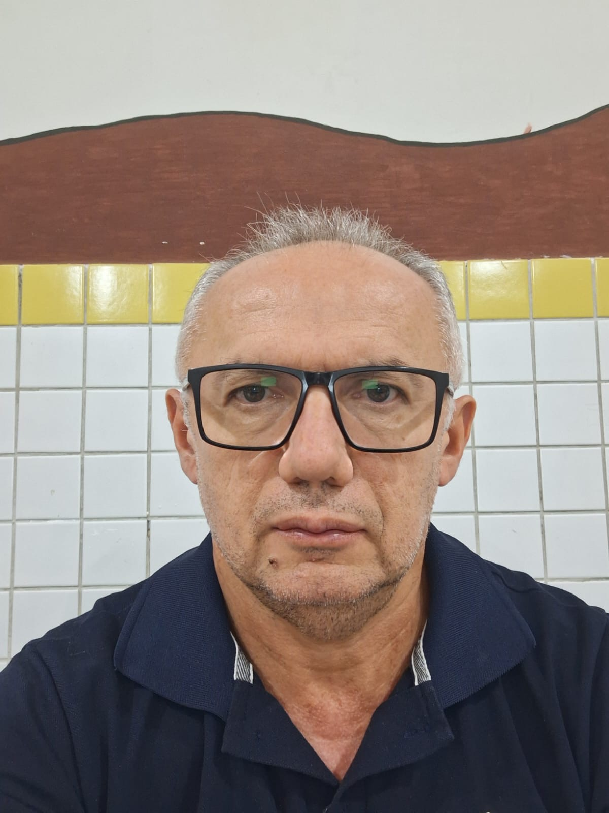

Dedicando mais de 30 anos ao ensino da Língua Portuguesa e à construção de futuros através do conhecimento.

Sou Francinaldo Aprígio dos Santos, professor de Língua Portuguesa nas redes estadual e municipal de educação. Venho de uma família humilde, que sempre acreditou que a educação é uma das ferramentas mais poderosas para transformar vidas e abrir caminhos para um futuro melhor. Foi com esse ensinamento que construí minha trajetória pessoal e profissional.
Há mais de 30 anos, escolhi a docência como profissão e, desde então, tenho me dedicado com compromisso e paixão ao ensino da Língua Portuguesa. Ao longo dessa caminhada, sempre busquei aprimorar meus conhecimentos e me qualificar cada vez mais, pois acredito que um bom educador nunca deixa de aprender.
Formação avançada que ampliou minha capacidade de contribuir para a formação crítica e linguística dos meus alunos.
Aprofundamento em Linguística e Literatura, bases fundamentais para um ensino de excelência.
Acredito que ensinar vai além de transmitir conteúdos: é também inspirar, orientar e ajudar a construir sonhos.